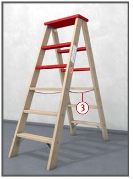
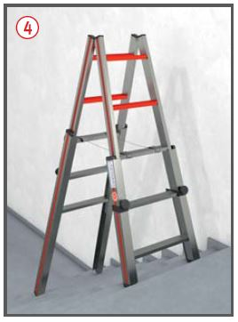
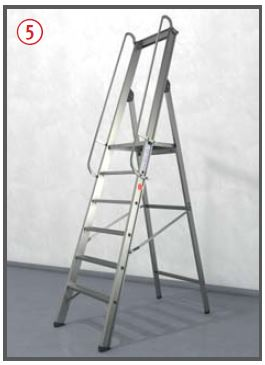
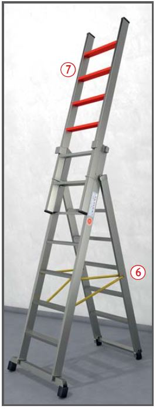

Absturzunfälle durch mangelhafte
Standsicherheit des
Leiterverwenders auf der Leiter,
mangelhafte Standsicherheit
der Leiter, Fehlverhalten des
Leiterverwenders, fehlende
Sicherung im Verkehrsbereich
oder Verwendung einer schadhaften
Leiter.
Allgemeines
Bevor eine Leiter als Arbeitsplatz oder als Zugang zu hochgelegenen
Arbeitsplätzen zur
Verfügung gestellt und ver wendet
werden soll, ist im Rahmen
der Gefährdungs beur teilung zu
ermitteln, ob der Einsatz einer
Leiter erforderlich oder nicht ein
anderes Arbeits mittel für diese
Tätigkeit sicherer ist. Bei der Leiterauswahl sind leichte Plattformleitern
sowie Podestleitern vorzuziehen.
Der Einsatz von Leitern ist auf
Arbeiten mit geringer Gefährdung,
geringem Arbeitsumfang
mit geringem Schwierigkeitsgrad
und geringer Dauer der Benutzung
zu beschränken.
Bauliche Gegebenheiten, die
der Unternehmer nicht ändern
kann, können ebenfalls zum Einsatz
von Leitern führen.

Schutzmaßnahmen
Der Beschäftigte muss mit beiden Füßen auf einer Stufe oder Plattform stehen. Die zulässige Verwendungsdauer beträgt für Beschäftigte bei einer Standhöhe > 2 m bis max. 5 m zwei Std./Arbeitsschicht.
Nur Leitern verwenden, die fest angebrachte und unbeschädigte Spreizsicherungen haben .
Laufen mit der Leiter ist
keine bestimmungsgemäße
Verwendung, Leitern immer
nach Gebrauchsanleitung des
Herstellers verwenden.
Zum Anstrich von Holzleitern keine deckenden Anstrichfarben verwenden.
Schadhafte Leitern nicht verwenden,
z. B. angebrochene oder
angerissene Holme und Stufen, verbogene
oder angeknickte Metallleitern.
Angebrochene oder angerissene Holme, Wangen und Stufen nicht flicken.
Holzleitern gegen Witterungs- und
Temperatureinflüsse geschützt lagern.
Ausreichend hohe Leitern bereitstellen.
Leitern standsicher aufstellen,
gegen Einsinken und
Umfallen sichern. Auf wirksame
Spreizsicherung achten .

Standsicherheit des Leiterverwenders verbessern durch
die Verwendung von Stufen- und Plattformleitern.
Stehleitern nicht wie Anlegeleitern verwenden.
Auf Treppen und schiefen Ebenen nur Stehleitern mit Holmverlängerungen einsetzen .
Jede Holmverlängerung nach
Herstellerangabe mit Leiterklammern bzw. Klemmlaschen
befestigen. Befestigungsabstand
gemäß Montageanleitung.
Von Stehleitern nicht auf
andere Arbeitsplätze und
Verkehrswege übersteigen.
Die obersten zwei Stufen von Stehleitern nicht besteigen; nur bei Leitern mit Plattform oder Podest mit Haltevorrichtung oder Umwehrung ist das Betreten der obersten Trittfläche zulässig .
Leitern im Verkehrsbereich z. B.
durch Absperrungen sichern.
Beschäftigte im Umgang mit Leitern vor der ersten Verwendung und danach regelmäßig unterweisen.

Zusätzliche Hinweise für mehrteilige Stehleitern
Stehleiter erst betreten, wenn druck- und zugfeste Spreizsicherungen wirksam sind .
Leiter nur bis zu der vom
Hersteller angegebenen Länge zusammenstecken oder ausziehen.
Bei Schiebeleitern auf freie Beweglichkeit
der Leiterteile sowie
auf vollständiges Einrasten der
Feststelleinrichtungen achten.
Die oberen vier Stufen bei
Stehleitern mit aufgesetzter
Schiebeleiter nicht betreten .
Zusätzliche Hinweise
für Podestleitern
Podestleitern nur auf ebenem
Untergrund aufstellen.
Umwehrung nach dem Betreten
der Plattform schließen.
Höhenverstellbare Podestleitern nach Herstellerangabe
aufbauen und abstützen .

Prüfungen
Art, Umfang und Fristen erforderlicher
Prüfungen festlegen
(Gefährdungsbeurteilung) und
einhalten, z. B. regelmäßige
Prüfung durch eine zur Prüfung
befähigte und beauftragte
Person.
Ergebnisse dokumentieren
(z. B. Leiterkontrollbuch, Prüfliste, Prüfplakette).
Kontrolle auf augenscheinliche Mängel und ordnungsgemäße Funktion vor jeder
Verwendung.